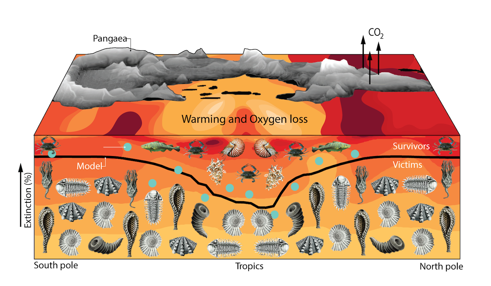

My research falls into three interrelated themes on the interconnections between climate and
Marine ecophysiology and biodiversity
The role of climate, ocean oxygen, and species ecophysiology in shaping patterns of aerobic habitat and biodiversity in the ocean is one of my primary areas of research. Working with Curtis Deutsch, our approach has been to constrain a mathematical model of aerobic metabolism with experimental data on the linked thermal and hypoxia tolerance traits from diverse marine animal species. This work reveals that inter-species variations in hypoxia traits predict diverse geographical aerobic habitat niches that span from the tropics to high latitudes and across ocean depth regimes (Deutsch, Penn and Seibel, Nature, 2020) . These predicted aerobic habitats align with observed species distributions better than do models based on either temperature or O2 alone. This work thus establishes the combined physiological stressors of temperature and O2 as common factors structuring the biogeography of diverse animal species.
To quantify habitat losses and associated exintction risks from climate warming combined this ecophysiological model of aerobic habitat with a set of future climate simulations forced by widely varying greenhouse gas trajectories (Penn and Deutsch, Science, 2022) . Under continued accelerating greenhouse gas emissions, climate change would drive extinction risk higher and biological richness lower than seen in the past tens of millions of years of evolutionary history. However, the projections also indicates that it is not too late to avoid extreme species losses by rapidly reducing greenhouse gas emissions today.

Paleobiology
I am interested in understanding the role of climate and Earth system oxygenation in paleobiological patterns throughout Earth history. To uncover the role of climate-forced aerobic habitat loss in Earth’s largest mass extinction, “the Great Dying” at the end of the Permian Period (~252 million years ago), I designed and ran a set of Earth System Model (ESM) simulations of the Permian/Triassic climate transition, forced by greenhouse gas emissions, that reproduce the ocean warming and oxygen (O2) loss indicated by geological proxy records (Penn et al. Science, 2018) . The effect of these changes on animal survival was evaluated by combining the ESM simulations with an ecophysiological model of aerobic habitat constrained by observed traits of diverse living species. The simulated changes in aerobic habitat reproduce the severity and latitudinal gradient of extinction reconstructed from the global marine fossil record. This work thus establishes physiological stresses from climate warming and ocean hypoxia as the primary cause of a past marine mass extinction, highlighting future extinction risk in the Anthropocene.
Ocean biogeochemistry
My work on ocean biogeochemistry aims to understand the role of microbial functional diversity in the ocean’s nitrogen (N) and O2 cycles. I developed a microbial ecosystem model, fit to geochemical data, of the ocean’s largest anoxic zone, in the eastern tropical north Pacific, to study how competitive dynamics between aerobic and anaerobic microbes regulate global nutrient loss (Penn et al., 2016 , 2019) . I found that microbial competition along minute O2 gradients at the edges of anoxic zones modulates the long-term rate of ocean N removal, its sensitivity to climate forcing, and causes basin-wide fluctuations in N loss over time even in a stable environment. Biological oscillations have been theorized for nearly a century in idealized models, but were shown for the first time in a three-dimensional and data-constrained model of ocean circulation. A predicted geochemical signature of the oscillations was also detected in environmental samples. This previously overlooked source of natural variability helps reconcile conflicting and hotly debated empirical evidence for the dominance of heterotrophic versus autotrophic pathways of ocean N removal.